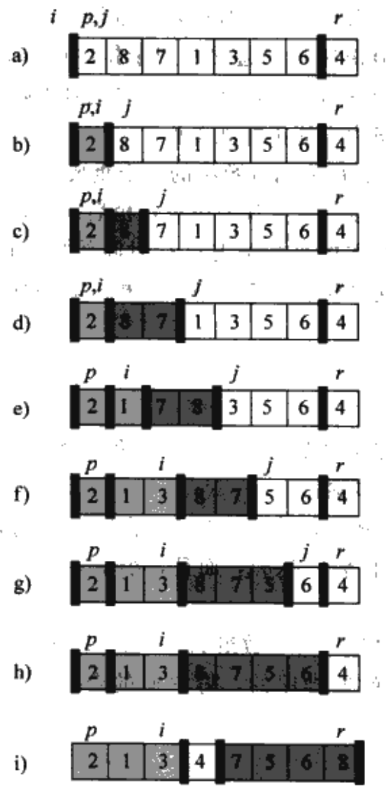

Quick sort is:
The thought of quick sort is divide & conquer:
The picture below is from "Introduction to Algorithm", it shows the process of quick sort.

Python code for memo:
# py 2.7
def partition(array, p, r):
x = array[r]
i = p-1
for j in range(p, r):
if array[j] <= x:
i += 1
tmp = array[i]
array[i] = array[j]
array[j] = tmp
tmp = array[i+1]
array[i+1] = array[r]
array[r] = tmp
return i+1
def qsort(array, p, r):
if p<r:
q = partition(array, p, r)
qsort(array, p, q-1)
qsort(array, q+1, r)